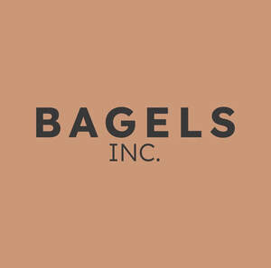

Trade Mark Journal No.2025/043 24 October 2025
UK00004278602 15 October 2025 (25,30,43)

- Class 25
- Knitwear [clothing]; Jackets [clothing]; Ready-to-wear clothing; Woolen clothing; Headbands [clothing]; Headbands for clothing; Gloves [clothing]; Gloves as clothing; Jerseys [clothing]; Parts of clothing, footwear and headgear; Knitted clothing; Hoods [clothing]; Windproof clothing; Rainproof clothing; Waterproof clothing; Visors [clothing]; Jackets being sports clothing; Jackets (Stuff -) [clothing]; Stuff jackets [clothing]; Playsuits [clothing]; Ready-made clothing; Infant clothing; Woven clothing; Leisure clothing; Sports clothing; Tops [clothing]; Men's clothing; Clothing; Furs [clothing]; Garments for protecting clothing; Layettes [clothing]; Clothing layettes; Linen clothing; Clothes; Aprons [clothing]; Maternity clothing; Kerchiefs [clothing]; Denims [clothing]; Shorts [clothing]; Cashmere clothing; Capes (clothing); Oilskins [clothing]; Gabardines [clothing]; Silk clothing; Leather clothing; Clothing of leather; Leather (Clothing of -); Collars [clothing]; Veils [clothing]; Corsets [clothing, foundation garments]; Embroidered clothing; Wristbands [clothing]; Belts [clothing]; Belts for clothing; Bandeaux [clothing]; Casual clothing; Bottoms [clothing]; Clothing for leisure wear; Latex clothing; Trunks being clothing; Drawers [clothing]; Drawers as clothing; Clothing for sports; Ties [clothing]; Athletic clothing; Clothing for children; Muffs [clothing]; Bodies [clothing]; Clothing for babies; Clothing for infants; Clothing for cycling; Weatherproof clothing; Pockets for clothing; Fabric belts [clothing]; Water-resistant clothing; Triathlon clothing; Handwarmers [clothing]; Clothing for skiing; Beach clothing; Thermal clothing; Cowls [clothing]; Chaps (clothing); Fishing clothing; Braces for clothing; Mitts [clothing]; Dance clothing.
- Class 30
- Coffee; Decaffeinated coffee; Iced coffee; Chocolate coffee; Coffee drinks; Coffee beans; Mixtures of malt coffee with coffee; Coffee beverages; Coffee (Unroasted -); Unroasted coffee; Caffeine-free coffee; Coffee extracts for use as substitutes for coffee; Coffee essences for use as substitutes for coffee; Coffee substitutes [artificial coffee or vegetable preparations for use as coffee]; Malt coffee; Coffee pods; Coffee beverages with milk; Flavoured coffee; Coffee bags; Unroasted coffee beans; Coffee flavorings; Coffee capsules; Mixtures of malt coffee extracts with coffee; Roasted coffee beans; Instant coffee; Freeze-dried coffee; Coffee flavourings; Coffee oils; Beverages with coffee base; Beverages with a coffee base; Espresso; Ground coffee; Coffee based drinks; Coffee in whole-bean form; Sugar-coated coffee beans; Beverages made from coffee; Beverages made of coffee; Coffee extracts; Ground coffee beans; Drip bag coffee; Substitutes (Coffee -); Coffee substitutes; Aerated drinks [with coffee, cocoa or chocolate base]; Coffee essences; Coffee based beverages; Mixtures of coffee; Coffee mixtures; Chicory for use as substitutes for coffee; Cappuccino; Aerated beverages [with coffee, cocoa or chocolate base]; Chicory [coffee substitute]; Prepared coffee and coffee-based beverages; Coffee concentrates; Coffee in brewed form; Mixtures of coffee and chicory; Coffee, teas and cocoa and substitutes therefor; Mixtures of coffee essences and coffee extracts; Mixtures of malt coffee with cocoa; Ice beverages with a coffee base; Prepared coffee beverages; Powdered coffee in drip bags; Coffee essence; Malt coffee extracts; Mixtures of coffee and malt; Coffee [roasted, powdered, granulated, or in drinks]; Chai tea; Tea; Tea beverages with milk; Barley for use as a coffee substitute; Chocolate bark containing ground coffee beans; Extracts of coffee for use as flavours in beverages; Drinks flavoured with chocolate; Coffee-based beverages; Beverages (Coffee-based -).
- Class 43
- Cafe services; Café services; Cafés; Coffee shops; Serving food and drink in Internet cafes; Coffee shop services; Bar and restaurant services; Restaurant and bar services; Providing food and drink in Internet cafes; Bistro services; Take-away restaurant services; Salad bars [restaurant services]; Coffee bar services; Serving food and drink in doughnut shops; Fast-food restaurant services; Hotel restaurant services; Self-service restaurant services; Providing food and drink in doughnut shops; Take-out restaurant services; Restaurant services; Restaurants (Self-service -); Self-service restaurants; Serving food and drink in restaurants and bars; Mobile restaurant services; Restaurant services incorporating licensed bar facilities; Brasserie services; Hookah lounge services; Catering in fast-food cafeterias; Providing food and drink in bistros; Eateries; Tourist restaurants; Delicatessens [restaurants]; Cocktail lounge buffets; Restaurants; Provision of food and drink in restaurants; Office catering services for the provision of coffee; Hookah bar services; Serving food and drink for guests in restaurants; Restaurant reservation services; Guesthouse; Restaurant services for the provision of fast food; Self-service cafeteria services; Take-away food and drink services; Booking of restaurant seats; Cocktail lounge services; Lounge services (Cocktail -); Grill restaurants; Catering of food and drinks; Takeaway food and drink services; Beer bar services; Airport lounge services; Food and drink catering; Catering of food and drink; Catering (Food and drink -); Teahouse services; Tapas bars; Shisha bars; Carry-out restaurants.
Bagels inc Ltd